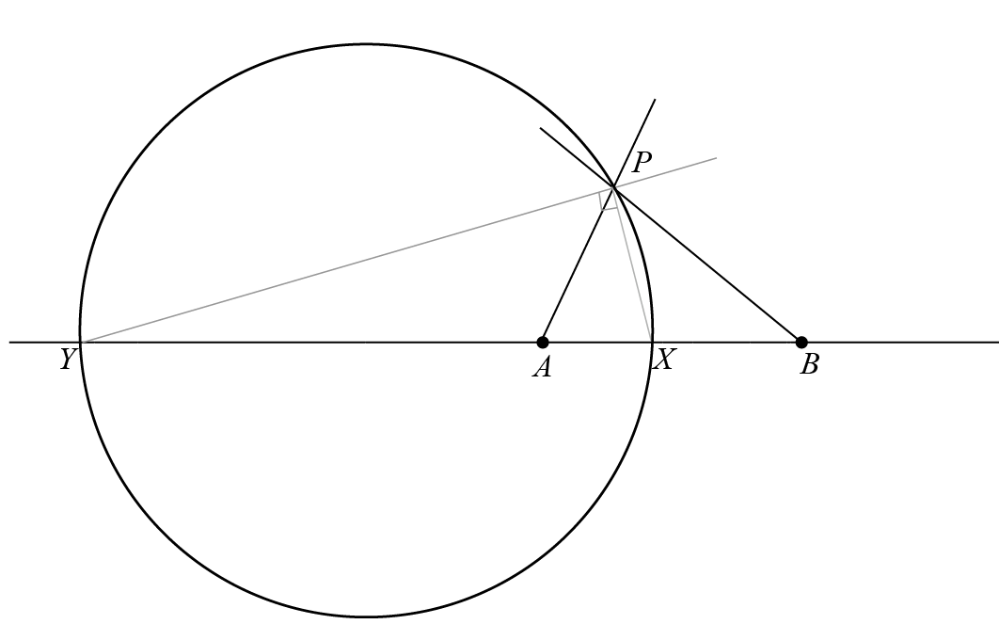

Circle of Apollonius
The Circle of Apollonius is defined as the locus of a point \(P\) which moves in such a way that the ratio of its distances from two fixed points, \(A\) and \(B\), is a constant \(\lambda\), with \(\lambda \neq 1\). This geometric construct is named after the ancient Greek geometer Apollonius of Perga, who extensively studied these circles among other conic sections.
Mathematically, if \(PA\) is the distance from point \(P\) to point \(A\), and \(PB\) is the distance from point \(P\) to point \(B\), then the Circle of Apollonius is described by all points \(P\) satisfying the condition:
where \(\lambda\) is a positive constant different from 1.
Geometrical Proof

Let \(A\) and \(B\) be fixed points on a plane, and let point \(P\) be a moving point such that the ratio \(AP:PB = \lambda\), where \(\lambda\) is a positive constant not equal to 1. Construct segment \(AB\) and consider an arbitrary position of \(P\). Construct \(PX\), the internal angle bisector of \(\angle APB\), and \(PY\), the external angle bisector of \(\angle APB\).
By the Angle Bisector Theorem, \(PX\) divides \(AB\) internally in the ratio \(AP:PB\), which is equal to \(\lambda\). Consequently, point \(X\) lies on segment \(AB\) and satisfies \(AX:XB = \lambda\). Similarly, \(PY\) divides the external segment extended from \(AB\) in the same ratio \(AP:PB\), which implies point \(Y\) lies on the extension of \(AB\) such that \(AY:YB = \lambda\).
Points \(X\) and \(Y\) are fixed since their positions are solely determined by the constant ratio \(\lambda\) and the fixed segment \(AB\). The angle \(\angle AYX\) is a straight angle, and the locus of point \(P\) must pass through both \(X\) and \(Y\) because these points satisfy the ratio \(AX:XB = \lambda\) and \(AY:YB = \lambda\), respectively.
Observe that the angle between line \(AX\) and \(AY\) is a right angle, thus indicating the locus of \(P\) is a circle with diameter \(XY\).